Photos
From the Field
Australia & New Zealand
Evangelism is the primary function of the church, and at Scope of Scripture we view this as the most important aspect of the Christian experience. We joyfully preach the gospel in all the world, and encourage others to do likewise.

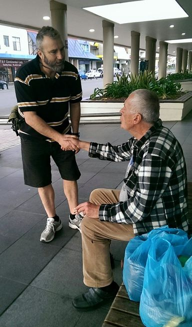
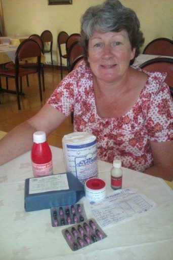
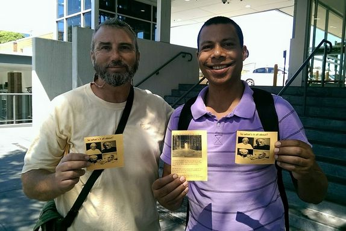
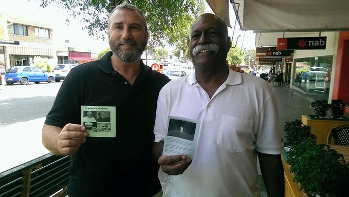
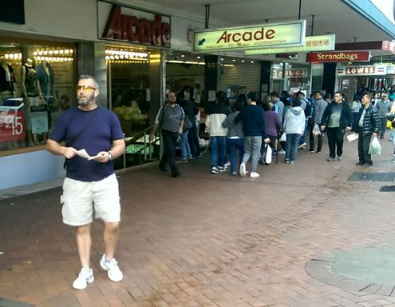
India
Various locations, including a leper colony, have experienced the meekness and gentleness of Christ.
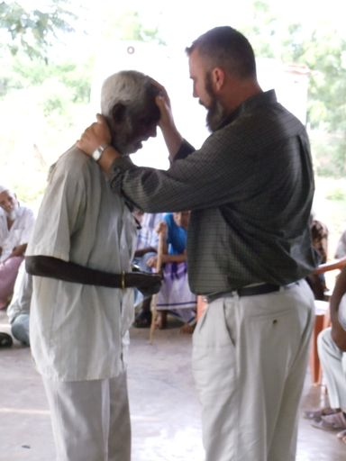
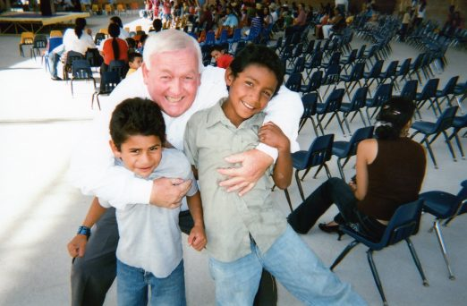
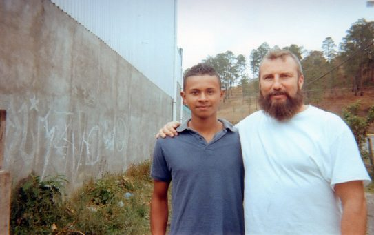
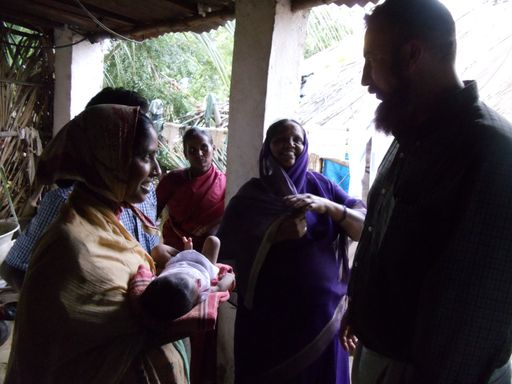

Honduras & Costa Rica
Thousands gratefully receive Christ as Lord and Savior, and experience the Lord who changes not, through His power to heal and deliver.
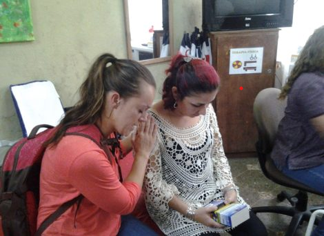
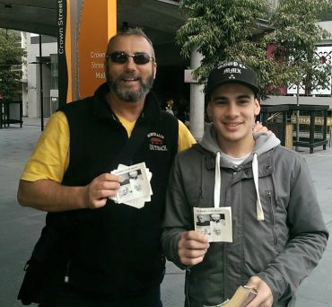
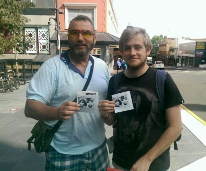


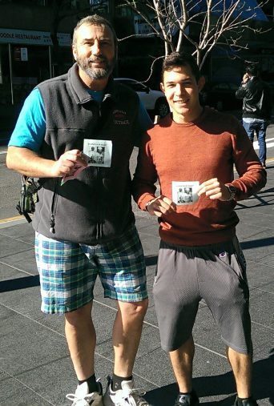
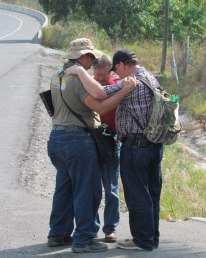
United States & Canada
Although the US is largely considered a Christian country, it is a big nation with many people who are in much need of the gospel. Canada, like many locations within the US, is equally in need — and thus both are benefiting from the goodness of God that draws men to repentance. (Romans 2:4)
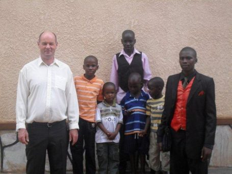
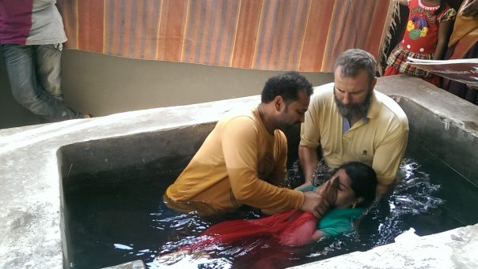
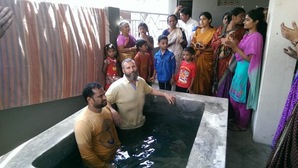
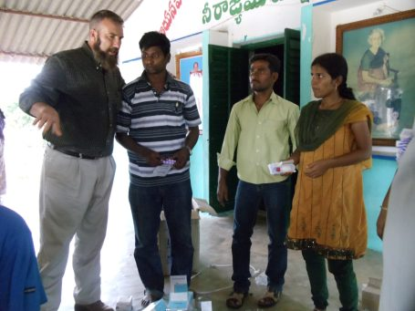
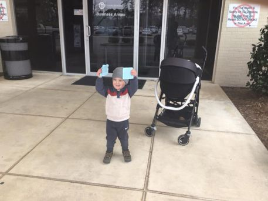
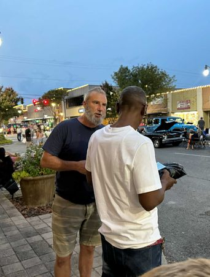
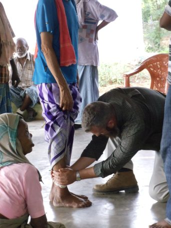
Africa
Many in Uganda have been impacted by the Gospel in spiritual and practical ways.


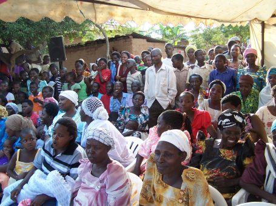
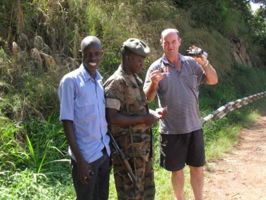


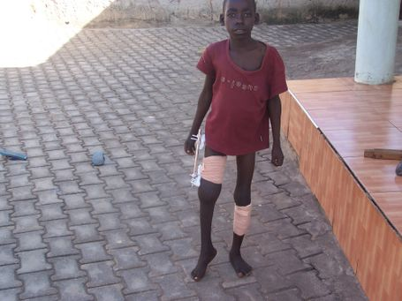